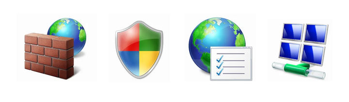

AIDAN MARK / PERSONAL FILES EDMONTON, AB / EST. ON THE WEB
A / M : : ZERO TRUST SECURITY REVIEW
[ home / projects / resume / e-mail ] * no scripts here *
[ << project drawer ] [ < previous ] [ next > ]
FILE 04 / 08 : : NETWORKS / IDENTITY / CERTIFICATES
Zero Trust Security Review
[ client ] ==== identity + certificate ==== [ service ]
client / team work / Proxmox, Active Directory, AD CS, IIS, mTLS
Worked with a team on a security assessment for Universal Rail Systems. We evaluated east-west traffic and built a virtualized proof of concept for identity-based access between internal services. My work included networking, Active Directory, certificates, reverse proxies, and policy hardening.
Delivered: Technical recommendations and a report to the client.

Network topology diagram from the archived security work.

Little icons from the original network-themed project card.
More: all projects / technical background / email Aidan
* * * * *
home / all the projects / résumé / write me
Last edited: 22 October 2026.
Made from ordinary HTML, old-fashioned CSS, and original project pictures. © Aidan Mark.